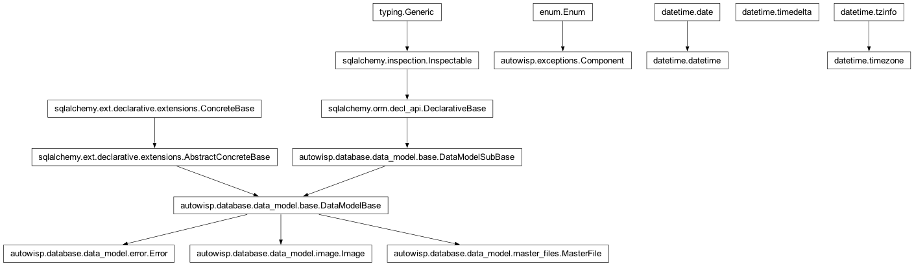

autowisp.error_persistence module
Class Inheritance Diagram

Persist AutoWISP errors as a queryable row plus a JSON sidecar.
Each persisted error becomes a small, queryable
Error row (the fields list
views and aggregate queries need) plus a per-error JSON sidecar holding
the heavy remainder (full message, complete related-file list,
details, traceback). The split keeps the SQLite file small while
still capturing rich context.
Two hard rules: persisting an error never raises (recording a
failure must not cause a second one), and only the main process
writes – a worker’s exception is already marshalled back to the main
process before the top-level handler calls persist_error().
- autowisp.error_persistence._build_error_row(exc, db_session)[source]
Build the inline
Errorrow (withoutsidecar_path).
- autowisp.error_persistence._error_bucket(exc)[source]
Return the sidecar sub-directory name for
exc.Bucketing by run keeps directories small and makes “drop everything from run 88” a single
rmtree. Errors with no run go tobuiorcliby component.
- autowisp.error_persistence._iter_sidecar_files(errors_dir)[source]
Yield
(absolute_path, basename)for every file under errors_dir.
- autowisp.error_persistence._resolve_artifact_fks(related_files, db_session)[source]
Map related files to known artifact rows (best-effort).
Resolves only artifacts that are genuine database rows with a stored path: a related file whose path matches
Image.raw_fnamegives the image, one matchingMasterFile.filenamegives the master. DR files, calibrated images, and lightcurves are HDF5 files with no row, so they are not linked here – they remain in the sidecar’s related-file list by path.- Parameters:
related_files (Sequence[RelatedFile]) – The error’s related files.
db_session – Active database session.
- Returns:
(image_id, master_file_id), eachNoneif norelated file maps to such a row.
- Return type:
- autowisp.error_persistence._row_age(row)[source]
The time an error row is dated by: its crash time, else write time.
- autowisp.error_persistence._safe_unlink(path)[source]
Remove
pathif present, swallowing OS errors. Returns success.
- autowisp.error_persistence._write_sidecar(exc, error_id, bucket, *, gzip_threshold=65536)[source]
Atomically write the sidecar JSON and return its relative path.
The payload is written to a
.tmpfile and thenos.replace``d into place, so a reader never sees a half-written file. Payloads above ``gzip_thresholdbytes are gzipped (the stored filename records which).- Parameters:
exc (AutoWISPError) – The error to serialize.
error_id (int) – The row id; names the file.
bucket (str) – The sub-directory (see
_error_bucket()).gzip_threshold (int) – Byte size above which the payload is gzipped.
- Returns:
The sidecar path relative to the project home.
- Return type:
- autowisp.error_persistence.cleanup_errors(*, older_than=None)[source]
Prune persisted errors: aged rows, orphan files, dangling rows.
Three passes, all best-effort:
Aged rows – when
older_thanis given, delete everyErrorrow dated (crash time, else row write time) before the cutoff, along with its sidecar.Dangling rows – a surviving row whose
sidecar_pathpoints at a missing file has the path cleared (the row stays valid as inline-only).Orphan files – any file under
<project_home>/errorsthat is not the sidecar of a surviving row (leftovers from write-path crashes, including.tmpfiles) is removed.
- autowisp.error_persistence.delete_all_error_sidecars(db_session=None)[source]
Delete the sidecar file of every recorded error.
Used when a project is deleted: removes exactly the files error persistence wrote (one per
Errorrow), leaving any unrelated files under theerrorsdirectory untouched. The emptied directories are cleaned up by the caller’s directory pruning.- Parameters:
db_session – Optional active session; one is opened if omitted.
- Returns:
None
- autowisp.error_persistence.delete_error(error_id, db_session=None)[source]
Delete an error record entirely: its row and its sidecar file.
A no-op if the row does not exist. Safe to call from a user action.
- autowisp.error_persistence.load_sidecar(error_row)[source]
Return the parsed sidecar detail for an
Errorrow, orNone.The lazy read path: list views use only the inline columns; this is called only when drilling into one error. A missing or unreadable sidecar degrades to
None(“detail unavailable”), never raises.
- autowisp.error_persistence.parse_duration(text)[source]
Parse a compact duration like
30d/12h/2wto timedelta.- Parameters:
text (str) – An integer followed by a unit (
s/m/h/d/w).- Returns:
The parsed duration.
- Return type:
timedelta
- Raises:
ValueError – If
textis not a recognized duration.
- autowisp.error_persistence.persist_error(exc, *, sidecar_gzip_threshold=65536)[source]
Persist
excas anErrorrow plus a JSON sidecar.Best-effort and never raises. The row is committed first, so it survives even if the sidecar write later fails (its
sidecar_paththen stays NULL and readers treat it as “inline fields only”). Only the parent process should call this.- Parameters:
exc (AutoWISPError) – The (already-stamped) error to record.
sidecar_gzip_threshold (int) – Byte size above which the sidecar payload is gzipped.
- Returns:
- The new
Error.id, orNoneif even the row insert failed.
- The new
- Return type:
int or None